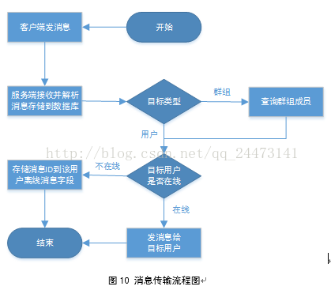
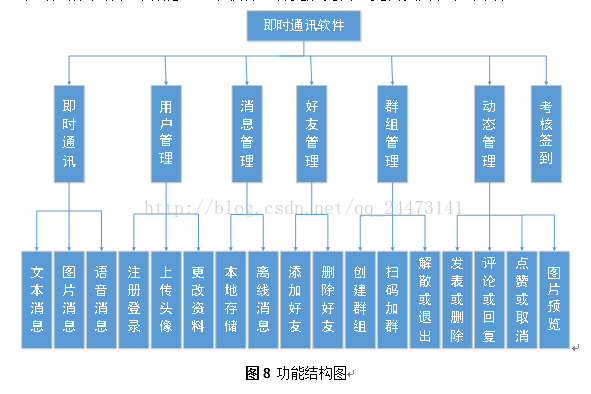

码客斯基
想要守护的人，想要做的事，喜欢的生活方式，都是前进的动力，努力的意义
码客斯基
3分钟前本软件的即时通讯技术采用了WebSocket协议，因为从spring4.0的版本才开始支持WebSocket， 所以本软件服务端的spring版本是4.2。第一步，先配置配置WebSocket入口，允许访问的域、 注册Handler和拦截器，WebSocket的访问权限是允许所有，访问路径是/wsim.do， 根据这个入口来与服务端建立tcp连接通道。根据WebSocket的API，我们要实现两个接口类HandshakeInterceptor 和WebSocketHandler。HandshakeInterceptor的实现类，需实现了他的两个方法beforeHandshake和afterHandshake， 这个两个方法是客户端与服务器初次进行握手连接的方法，初次握手连接前，连接用户会传过来其用户id， 当握手连接成功会用此id与这个用户的连接进行绑定，作为这个链接的唯一标识。


码客斯基
3分钟前本软件的即时通讯技术采用了WebSocket协议，因为从spring4.0的版本才开始支持WebSocket， 所以本软件服务端的spring版本是4.2。第一步，先配置配置WebSocket入口，允许访问的域、 注册Handler和拦截器，WebSocket的访问权限是允许所有，访问路径是/wsim.do，